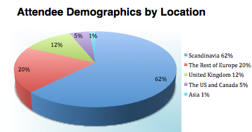
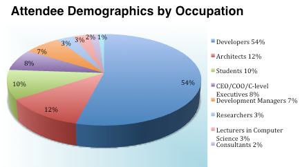
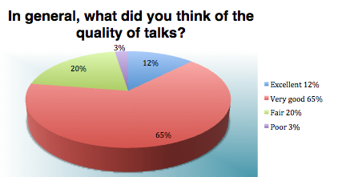

Erlang User Conference (EUC) is a two-day, multi-track event on Erlang programming language with elements of Elixir. We focus on real-world applications of Erlang, concurrency, distributed computing and scalability. We strive to bring together people passionate about Erlang and high-performance, massively scalable distributed systems.
Few figures from EUC 2015
300 software professionals including developers, architects, development managers, language designers, researchers, community leaders, technology visionaries and business professionals attended the Erlang User Conference 2015.
Whilst the majority of our attendees came from the Scandinavia (63%), we also had delegates and speakers coming from the other parts of Europe (20%), the United Kingdom (12%), the United States and Canada (5%) and Asia (1%).

EUC 2015 attendees are developers, architects, students, C-level executives, development managers, researchers, Computer Science lecturers, community leaders, language designers and technology visionaries.
EUC 2015 was a success. We maintained a high level of participation in both technical (Talks and Tutorials) and social parts of the event (lunch and coffee breaks, dinner and the ErLounge Party, farewell drinks). We attracted 300 attendees from Scandinavia, the rest of Europe, the United Kingdom, US and Canada, as well as Asia.

There were 51 speakers delivering 36 talks, 2 keynote presentations and 12 tutorials. The conference was preceded by training sessions on Express OTP and Advanced Erlang Techniques.



All attendees, speakers, sponsors and volunteers at our conference are required to agree with the following code of conduct. Organisers will enforce this code throughout the event. We are expecting cooperation from all participants to help ensuring a safe environment for everybody.
tl;dr: Don’t be a Jerk
Need Help?
You have our contact details in the emails we've sent.
The Quick Version
Our conference is dedicated to providing a harassment-free conference experience for everyone, regardless of gender, sexual orientation, disability, physical appearance, body size, race, or religion. We do not tolerate harassment of conference participants in any form. Sexual language and imagery is not appropriate for any conference venue, including talks, workshops, parties, Twitter and other online media. Conference participants violating these rules may be sanctioned or expelled from the conference without a refund at the discretion of the conference organisers.
The Less Quick Version
Harassment includes offensive verbal comments related to gender, sexual orientation, disability, physical appearance, body size, race, religion, sexual images in public spaces, deliberate intimidation, stalking, following, harassing photography or recording, sustained disruption of talks or other events, inappropriate physical contact, and unwelcome sexual attention.
Participants asked to stop any harassing behavior are expected to comply immediately.
Sponsors are also subject to the anti-harassment policy. In particular, sponsors should not use sexualized images, activities, or other material. Booth staff (including volunteers) should not use sexualized clothing/uniforms/costumes, or otherwise create a sexualized environment.
If a participant engages in harassing behavior, the conference organizers may take any action they deem appropriate, including warning the offender or expulsion from the conference with no refund.
If you are being harassed, notice that someone else is being harassed, or have any other concerns, please contact a member of conference staff immediately. Conference staff can be identified as they'll be wearing branded t-shirts.
Conference staff will be happy to help participants contact hotel/venue security or local law enforcement, provide escorts, or otherwise assist those experiencing harassment to feel safe for the duration of the conference. We value your attendance.
We expect participants to follow these rules at conference and workshop venues and conference-related social events.
Original source and credit: The Ada Initiative
Please help by translating or improving: http://github.com/leftlogic/confcodeofconduct.com
This work is licensed under a Creative Commons Attribution 3.0 Unported License
Student passes
It is our priority to build a bridge between the academia and the industry and support the new growing generation of programmers in developing new skills.
If you are a student, we have 35 free student passes to give away!
If you are an academic, we are happy to offer you a 50% discount academic pass.
Email us from your university account to get your pass.
Volunteers
We would love to have you in our volunteering team! As a volunteer, you would help us out before and/or during the conference with practical tasks (packing delegate bags, session monitoring, info desk help and the like), and in return, when not working, you would be able to attend the conference sessions and social events free of charge.
Please fill in the form HERE.